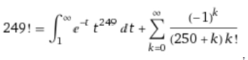

NON-INFINITE NOVELS: COMBINATORY AND NARRATIVES
In this digital experiment the statute is very simple, we started with the novel Farabeuf by the mexican writer Salvador Elizondo. One authors and 249 fragments of the book, that users can qualify to determine the optimal version.
The fragments transmute the vision of the object-being, they vary around a sectioned history where each "additional" element changes the total notion. The strategy is not to divide the plot but to dismantle it into passages that vary in style and dimension; some unfold through several pages; others approach the aphorism or the graphic novel, a genre that has transformed the vision of comics into a narrative art.
Initially, under this configuration there is the possibility of obtaining “infinite” combinations, each of which represents a possible reading. As more readers act as co-creators, the combinatorial possibilities increase. The purpose is that every reader would have a unique story. First you can read the original plot in alternative ways, because Salvador Elizondo choose to freeze an instant, so everything that happened in the novel occur at moment of the reading. Here, at comparation of the realistic literature, changing the order of the factors or fragments does not alter the product or do they?
This question goes beyond of this dynamic system of hyperliterature.
From the following equation,
the preliminary result is, with the available blocks, of 1.2931425043636430929283258208097473 883979374870695122 × 10^490 different readings. Just in the first exercise of five. To put this number in perspective, the number of atoms in the observable universe, by comparison, is only estimated to be around 10^80. So, each person would read a unique text
Like Jorge Luis Borges define, in the beginning of The Library of Babel “The universe (which others call the Library) is composed of an indefinite and perhaps infinite number of […]”.
In the 1950s, mathematician Claude Shannon made a calculation to determine how many different games of chess were possible, and came up with the number 10^120. Go, the Chinese game, the play ruled by the AI -alphaGo-, have a total number of possible games estimated “10700 is thus an overestimate of the number of possible games that can be played in 200 moves and an underestimate of the number of games that can be played in 361 moves.” (Wikipedia).
The algorithm generates, the structure of the communication, a population of texts that are delivered to the readers. Readers evaluate the texts by four parameters to qualify: You liked (aesthetic appreciation), the history is clear (ontological), it is the optimal order (structural) and you recommend it (general score).
Then, in the next three iterations, you can read by each particular story and characters. And in the fifth iteration, you would read a text without narrativity, the pursuit of Flaubert.
The variability of the characters and their actions, coupled with the distortions of time and space, give the feeling of both bewilderment and multiplicity, bordering on the reader seeking uniqueness and at the same time the whole.
With the tools that AI conform, the transformation of the fixed relation of the plot to be reconfigured in a specific way by means of the opening of the discourse between the user and the machine, breaking the interpretative postulate of the theory of the reception, the active reader could be offered a personalized work, with it a new hypertextual genre would be devised, when linking the digital tools with the multitextuality, in the sense that Roland Barthes uses that a text is any code to decipher. This would imply profound changes in the way of narrating and reading the stories.
FIRST ITERATION
Acabo de escribir infinita. No he interpolado ese adjetivo por una costumbre retórica; digo que no es ilógico pensar que el mundo es infinito. […] Quienes la imaginan sin límites, olvidan que los tiene el número posible de libros. Yo me atrevo a insinuar esta solución del antiguo problema: La biblioteca es ilimitada y periódica. Si un eterno viajero la atravesara en cualquier dirección, comprobaría al cabo de los siglos que los mismos volúmenes se repiten en el mismo desorden (que, repetido, sería un orden: el Orden). Mi soledad se alegra con esa elegante esperanza.
I have just written the word “infinite.” I have not interpolated this adjective out of rhetorical habit; I say that it is not illogical to think that the world is infinite. […] Those who imagine it to be without limit forget that the possible number of books does have such a limit. I venture to suggest this solution to the ancient problem: The Library is unlimited and cyclical. If an eternal traveler were to cross it in any direction, after centuries he would see that the same volumes were repeated in the same disorder (which, thus repeated, would be an order: the Order). My solitude is gladdened by this elegant hope.
Jorge Luis Borges, “La biblioteca de Babel”
Once the reading and qualification process is finished, we will carry out an analysis on the reading process and three digital books will be developed, showing the reading process, with optimal, multigeneric and negative scores.
TEST
FOR AN EXHAUSTIVE ANALYSIS: “The reader as a hypertext co-creator in Farabeuf by S. Elizondo”, David Núñez
ITERATION 2:
Farabeuf is a story where time does not pass, fragmented a character in three stages of a life, portraying a Chinese sacrifice, on the beach in love with her and old when he goes to ... In Farabeuf time does not pass, everything is a I remember, 249 fragments are a moment. That's why they called it a one-moment chronicle. With combinatorics, we mix the 249 fragments and an infinite moment is achieved. Like Borges in El Aleph here everything always happens in the present of the reading, of the inventions of the old man, fu Tchu Lí who was a martyr or a traitor ...
Farabeuf does not relate randomly and not all plots are possible, where the reader varies the arrangement in which they are accommodated. The idea is to generate uncertainty about what counts and the nature of those involved in the action, so Elizondo does not seek infinity of readings or fragments that alternate in a non-linear reading.
In the novel, the reader is an interpreter in the same sense, imagines texts in one way or another, changes their interpretation of the plot as it is constructed, and comes to redefine history and its connection, after reading, building understanding semantics of the text with a mental kuleshov effect.
CHARACTERS
Farabeuf not only tells three stories about a photograph, each plot is structured around themes that allow him to consolidate the story, and make up the hidden structure of the novel. In this case, I decided to separate them.
In Farabeuf the characters mutate, they lack a stable identity. We have divided the characters according to their links and spaces: in Paris, Dr. Farabeuf and the nurse Mélanie Dessaignes; in China: Paul Becour, Sister Paula of the Holy Spirit, Fou-Tchou-Li; on the French beach, the man and the woman.
The first story, the most complex and extensive of the novel, takes place in house 3 of the rue de l'Odéon, in Paris. In it, Dr. Farabeuf comes with a briefcase full of surgical instruments and the desire to possess the remains of a body, the Nurse, in a concretion of the sacrificial rite, where the linking of the characters lies more in the symbols than in the actions .
You can also see as unfolded characters: Farabeuf is the historical surgeon, the man who shivers on the beach, the passer-by in Paris, the spy-photographer Paul Becour and the lover; the nurse is Mélanie Dessaignes, Sister Paula of the Holy Spirit, the prostitute Mlle. Bistouri, the woman who holds the starfish, and the beloved.
ITERATION 3: THE STORY OF...
In my graduate thesis I divided the characters into five, according to their relationship with the ritual of torture and photography: The torturer (Farabeuf and Paul Becour); the object of desire (The nurse and its variations); the bereaved (Fou-Tchou-Li) and the concurrence (the characters that travel on the beach).
Dr. Farabeuf arrives at the house, observes with desire the nurse, spreads his surgical instruments on a bloody table and prepares her for the ritual. The way in which he instructs his victim is through photography and the tortuous and erotic recreation in the sacrificial nurse.
The second level takes place in a beach of Honfleur, Normandy: two lovers chase each other in the waves, stop in front of a putrefied starfish and run to a house where they will copulate ecstatically for the photography of Leng T'che.
ITERACIÓN 4: TRANSFORMATION OF THE PLOT
In the third level, Farabeuf, turned into the spy Paul Becour, infiltrates China to establish a Catholic Church, contribute to the fall of the Manchu dynasty and accelerate the adhesion of the Empire to the West.
The basis of this plot is not the relationship between the spy, the nun and the monsignor around the spell against China and the implantation of Catholicism, but the torture portrayed by Dr. Farabeuf that not only refers to the ecphrastic description but to the concretion of the inhabited moment.
ITERATION 5 TELL THE NOTHING
In the 19th century, the possibility of writing narratives that -paradoxically- did not contain a story was designed. Flaubert tried in his unfinished work Bouvard et Pécuchet, where, as Salvador Elizondo clarifies in "Mi deuda con Flaubert", "the concern for nothingness goes hand in hand with that of pure writing. It is not possible to conceive it if it is not uncontaminated in meaning or form, reduced to its essential sensitive condition; a writing that has its origin in nothing and that is fulfilled in itself ". (Elizondo, 2001: 102) But even with the literary purpose of breaking with this traditional precept, which Mallarme took to one of its final consequences, when nothing is said, something is being talked about; the writing itself becomes the argument. Elizondo tells, tells stories that do not contain an argument in the classical sense.
Rolando Romero and John Bruce-Novoa declare, in one of the most dangerous common places of the Elizondian study: "Elizondo does not count anything," he writes; he does not seek to communicate anything, he writes. " (Elizondo, 2009: 2) I disagree, Elizondo tells, develops themes; Even if it is antinomy to relate the nothingness, it is not the first on which it is argued that he writes a literature without a plot.
To do this, we mix the fragments where there are no nominated characters or defined spaces. Ie a novel without characters or spaces, more than a piece, a story that does not break the Aristotelian idea of the plot.
WHY FARABEUF?
We chose Farabeuf because Elizondo alternates the three stories in 249 fragments. As they are not active narratives, the characters do not develop in a time / space with a resolutive end, so they base the alternation on variations of the actions, in a simile with the theme with musical variations, where the main idea is distorted or develops "And then I abandoned myself to his embrace and I opened my body so he would penetrate me as the dagger penetrates the wound ..." (142), a fragment that is replicated three chapters later, "She, meanwhile, thought, 'And I will abandon myself to his embrace and I will open my body so that he will penetrate me as the assassin's dagger penetrates the heart of a legendary and magnificent prince ... '"(184) This variation is a sample of how the story is transfigured - fragments alter the stories, they camouflage the characters, the time is changed, the space mutates; what is repeated with the photographic exhibition on the beach, the doctor's ascent by the stairs or the actions that Melanie develops in the house. The content is distorted and the verb tenses and the presence of the narrator are muted. Variations (De Teresa, 1996: 91) that generate polyvalence as a mutation of the musical structure in narrative, that the reader does not know what the main story is and has to reconstruct the essence of the "real", although "they are lost sight of in every different variation, but there is a clear design to build them all within an appearance of structural unity. "(Copland: 152)
The Mexican writer narrates the moment with different frames. Create several ideas at the same time: the Ouija board, the falling coins, the hand holding the handrail, the legs that move between tinkling, the hidden gestures of the woman, the "phonograph attached to the wall, between the two windows, repeated forever the same cry "(158), everything happens at the same time, or rather, the reader accommodates them at the same temporal level, which results in an actangencial vacuum where they only acquire meaning when their actions are ordered in a relaxation from the reordering of the reading. For this, Elizondo resorts to the variation in the fragments and the simultaneity of the actions, which allow the instantaneity to be constructed without altering the successive essence of the literature.
Elizondo fragments the discourse and changes it, when combined with repetition, as a narrative mechanism, which allows it to stop time. Repeats but distorts.
To you what story Salvador Elizondo will tell you. This is a tribute to his work. Yo hago estructuras, no poesía
NEXT
We use this idea and transformed. In Evolutionary Books (Núñez-Rábago) we use a multiplicity of capitular stories that through the use of a genetic algorithm, users can determine which is the optimal version. In this way, we seek to move from the linear imposition of reading to a process of participatory reception, with the support of computer systems.
In this hyperdigital text, the fragments are interspersed and studied from evolutionary algorithms, computational tools that seek to solve optimization problems through mechanisms similar to those found in the process of biological evolution (they use the concepts of inheritance, selection, natural, mutation and genetic recombination, among others) to generate different solutions to problems with a search space too broad to explore exhaustively. Genetic algorithms belong to this branch and require two fundamental questions: a genetic representation of possible solutions and a way to evaluate their optimization. From this, the mechanism seeks to generate better solutions in each iteration of its operation.
With Artificial Intelligence it will be possible to create a multiple narration where all roads are possible and are canceled in juxtaposition, in a simile to Borges's theory in "The Garden of Forking Paths": "In all fictions, every time a man faces different alternatives, opts for one and eliminates the others; in that of the almost inextricable Ts'ui Pên, he chooses - simultaneously - for all. It creates, in this way, various paths, different times, which also proliferate and diverge. Hence the contradictions of the novel. "(Borges, 1993: 112)